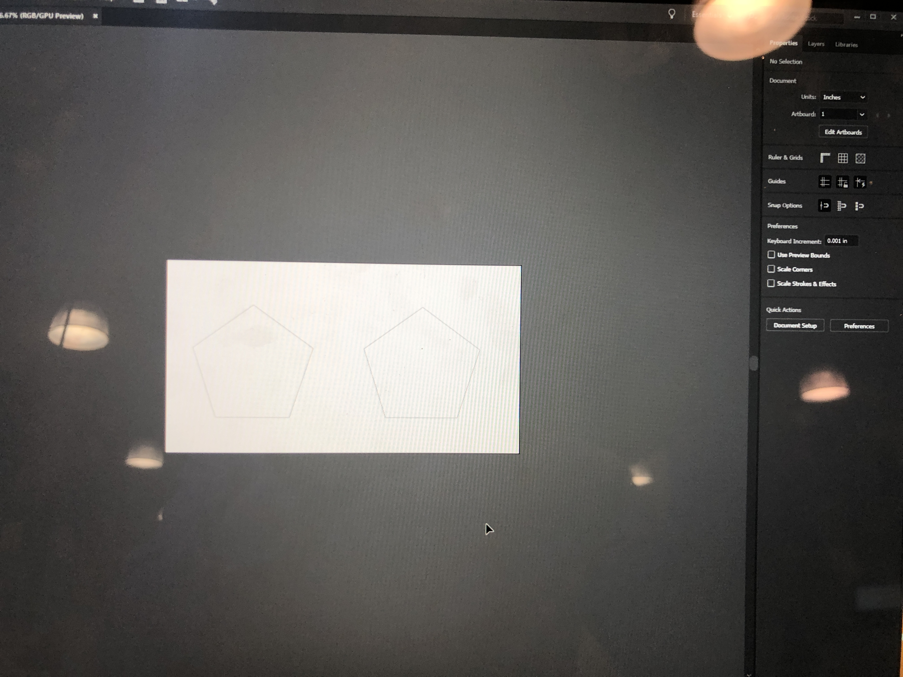
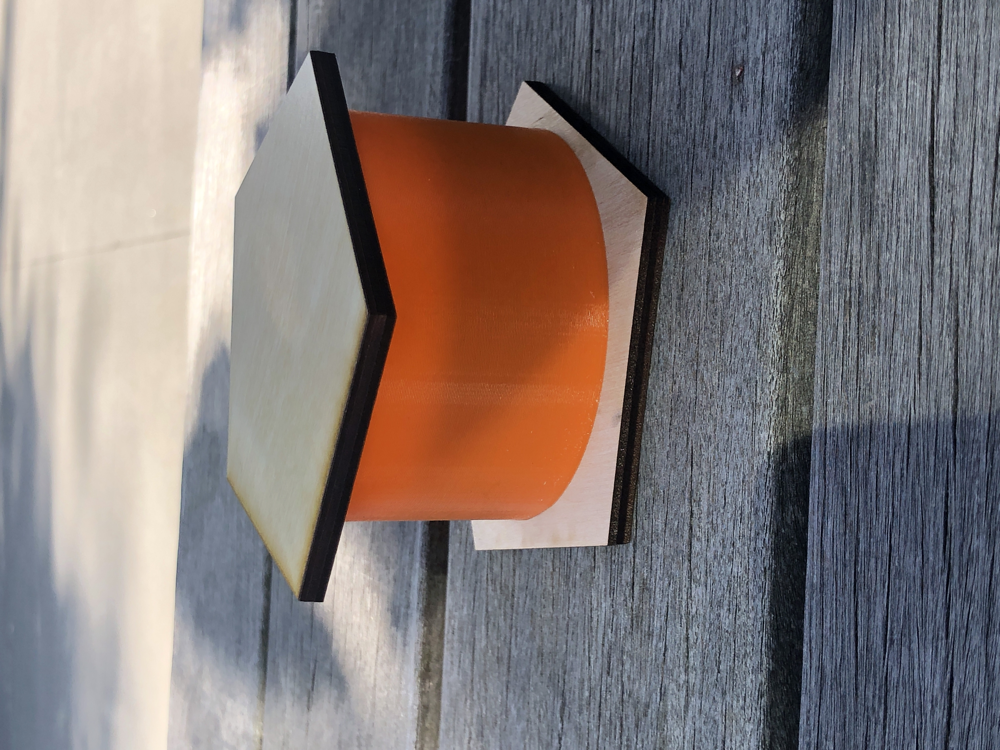

Assignment 3
This project was challenging. That's an understatment for most of us.
I had a pretty clear idea from the start of what I wanted to do, and figugred it wouldn't be that challenging, the most challenging thing would be assembling the brackets.
However, I wanted to experiment with a few different things, so I had two other projects in mind:
1. IKEA PS 2014 Lamp (aka Death Star)
2. Pixar Lamp
For seperate reasons, both of these were unfeasible, so I returned to my idea of a dodecahedreon (12 sided shape), made of pentagons, with gaps between the laser-cut wood pieces to let the light out. I would incorporate 3D printing in this design by having a cup essentially hold the light while brackets would clip the pieces together (similar to press fit).
I began my design for this in Grasshopper / RHino, and actually found it pretty simple to create the basic "lampshade" pieces. I created the pentagons for a size of about 5 inches, and then duplicated them.
For the base, I created a simple cylinder that would match the dimensions of the lighjt from Amazon (3'x1.5'x3') and would sit on the base, which is one of the already designed pentagons.
Unlike in previous projects, the design was the easy part of the project. Once I got to the Mill, I entered a 3 dimensional hell.
At this point, I still was not sure of the thickness of the wood and if it would lend well to brackets, so I started by test printing my design on cardboard and verifying it would work.

Next, I purchased some plywood from the Mill staff, copied my designs to Illustrator, and then printed it (WHICH IS STILL AWESOME)
Laser Settings: 6% speed, 100% power, 100% frequency
The next 5 hours were spent on various ways of 3D printing, and ultimately ending up happy with the most basic idea.
I started with wanting to print the cylinder design, as that could be my fallback at the bare minimum, and I could design around it.
Unfortunately, it took at least 3 false starts before I got a viable product (and even that had to print overnight which left my fate to the printing gods).

For the brackets, I encountered similar issues where I had 2 false starts, followed by a final blow which I discovered after printing overnight, and leaving my brackets in a good place.
DOOM.
With the brackets out, I realized my design could not necessarily stand on it's own, however I did have a lot of cool component parts that could be put together in some fashion, in what I'm calling a "S'more" like lamp.

Reflection
I enjoyed this project as a bonding experience with several of my classmates. I was super excited to 3D print, although not thrilled with the challenges that it presented, not only from a time consuming perspective, but the challenges I faced with the actual hardware rather than the design. I loved the endless design possiblities that something simple like a lamp presented, although I felt very limited by not being able to print in a timely manner, or have so many instances where a design was ruined by a bad print.
Shout Outs:
Shout outs to: Julie (loaning me her USB and also just general misery sharing), Leo (for loaning me his USB and distracting me with bad Windows design), D'Marcus (FOR ALSO LOANING ME HIS USB), Elizabeth (for moral support and advice on not breaking Rhino), and Kira (for assisting with retreiving my 3D prints from the Mill!). Additional shout outs: Andrew from the Mill for assisting me with the laser cutter and 3D printers, and Joshua for giving me some tips on designing and 3D printing!
Source Files:
Lamp Shade
Lamp Base